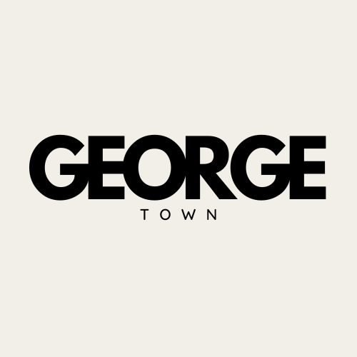

EXPLORE GEORGETOWN, A HERITAGE TO EXPLORE
Home
Heritage
Attraction
About Us
Georgetown Architecture
HISTORIC BUILDING
Place of Worship
[Click here to download WARC File]
Fort Cornwallis' Northern Wall
[Click here to download WARC File]
Pinang Peranakan Mansion
[Click here to download WARC File]
EXHIBITION
George Town Festival 2023
[Click here to download WARC File]